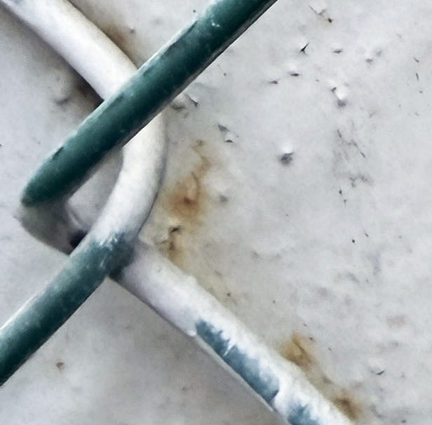
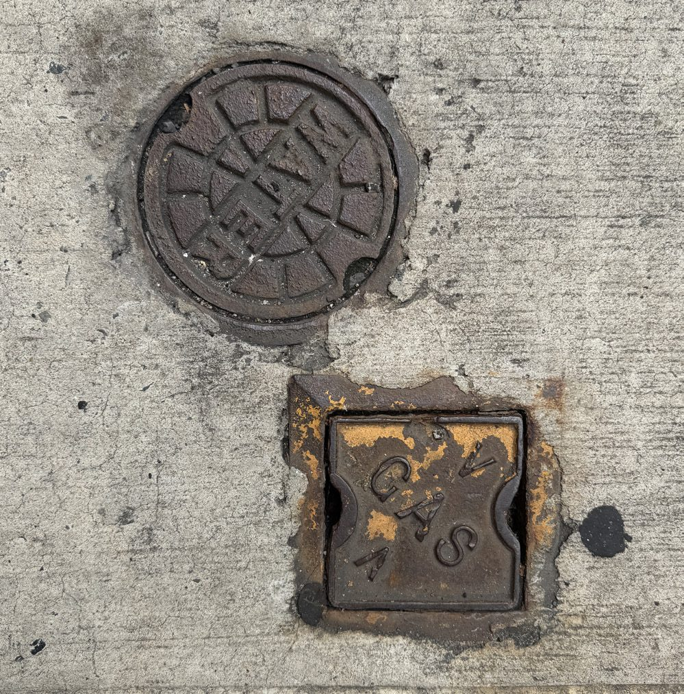

Tips and Tricks for Smartphone Setup for Seniors.
Setting up a smartphone can feel a little like learning to ride a bike — exciting, unfamiliar, and sometimes a little frustrating. There may be a few wrong turns along the way, and that is completely normal. Smartphones are constantly changing, and learning how to use one takes time, practice, and patience.
More and more people are using smartphones as part of their everyday lives. According to a 2021 survey from the Pew Research Center, 61% of adults aged 65 and older were using smartphones. From making phone calls and sending messages to sharing photographs, video calling family, checking directions, or keeping important contacts close by, a smartphone can be a useful way to stay connected.
But sometimes the screen can feel overwhelming. The text might be too small, there may be too many icons, or a simple action can suddenly involve several unfamiliar steps. You might swipe the wrong way, tap something by accident, or simply not know what a symbol means. That doesn't mean you can't use the technology — it simply means you are still learning how it works.
That's where this >> easy smartphone setup << for seniors makes all the difference. With a few thoughtful steps, you can turn any phone into something that feels simple, familiar, and comfortable to use.
This guide will walk you through each part of the process — from choosing the right phone and adjusting accessibility settings to adding emergency contacts and favorite family apps.

There are also a number of functions where the Side Button is used in combination with another button on your phone. In all of these cases you would press both buttons simultaneously. The most important is Emergency SOS.
More information about many of these topics can be found on seniortechclub.com
Before you even turn the phone on, you'll want to prepare for a smooth setup experience. Think of this as a team effort — one that helps you feel empowered, not overwhelmed.
Enable "Zoom" or "Magnifier" so they can enlarge photos or menus with a quick tap.
Try it out. Click dark mode and light mode to explore the difference. Only the white half of this page changes — in the same way, only your phone's screen changes.
Take a few minutes to explore these options, deciding what feels best for you.
The card in the corner of this page does the same job as the step above — it makes every word on the screen bigger. Press the + on it a few times, then do the same thing in your phone's settings. It's the same idea, and you've already done it once.
If you feel overwhelmed by too many options, simplify the screen. Use "easy mode" (on many Androids) or a simple home launcher.
Set up "Guided Access" on iPhones to lock the screen to one app when needed. Reduce notifications to avoid distractions or confusion. This keeps the phone peaceful and easy to navigate, turning it from a maze of icons into a calm, familiar space.
A simple home screen helps you feel in control and prevents frustration when you're trying to find something quickly.

Keep it simple, two homepages like two utility covers. Too many is a crowd.
